Normal Skin
One would consider their skin type to be normal if they are able to describe it as neither oily nor dry. If there is ever a presence of oiliness or dryness, it is often rare and easy to resolve. Pores tend to be not easily visible and skin exhibits few lines and wrinkles. A normal skin type has a smooth and even skin tone with no marks or blemishes.
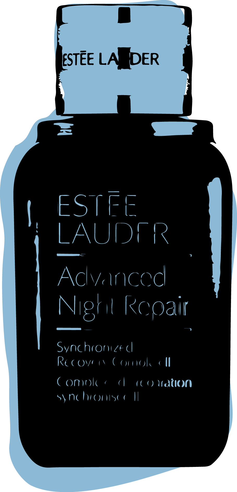
DONE
×
FRESH
Soy Face Cleanser
This gel face wash has a cult following for the way it gently removes everyday dirt and makeup—even mascara—without drying the skin. With amino acid-rich soy proteins, soothing cucumber extract, and balancing rosewater, it tones, soothes, and softens for a radiant, healthy-looking complexion. Perfect solution to treat dryness, fine lines and wrinkles, as well as loss of firmness and elasticity.
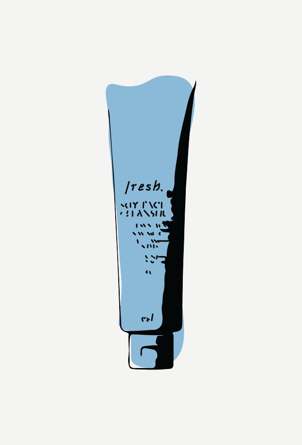
×
ESTÉE LAUDER
Advanced Night Repair Synchronized Recovery Complex
Reveal a smoother, more radiant, younger look and wake up to more beautiful skin every day. This powerful serum dramatically reduces the look of key signs of aging, while maximizing the power of skin’s natural nighttime renewal with exclusive ChronoluxCB™ technology. It improves the appearance of fine lines and wrinkles, and leaves skin smoother, stronger, and more hydrated.
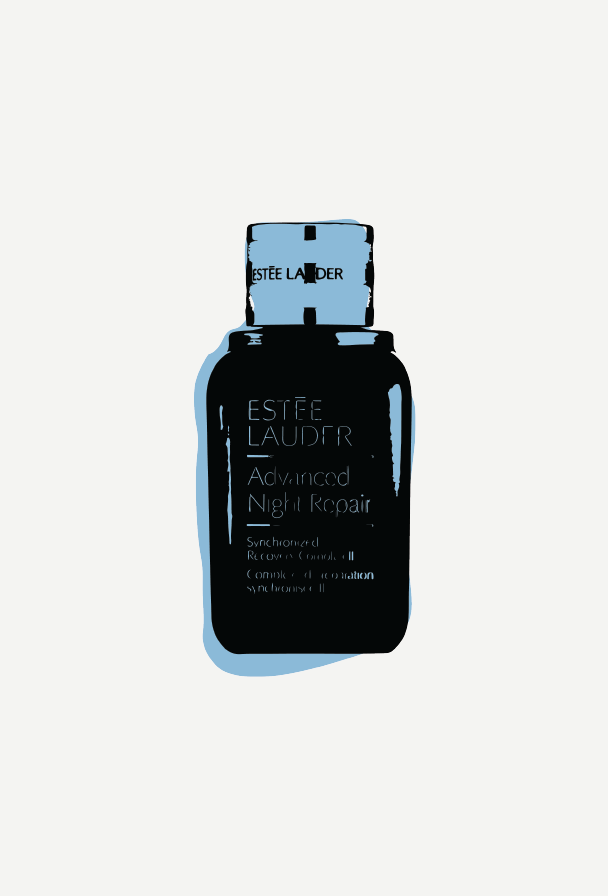
×
BELIF
The True Cream Aqua Bomb
This formula contains a blend of apothecary herbs, including antioxidant-rich lady's mantle which helps neutralize skin-damaging free radicals, improves skin elasticity, and minimizes the appearances of pores. The refreshing cream is formulated to burst when applied, releasing a flood of weightless moisture onto skin for a healthy, smooth, supple appearance. Specifically treats for dullness and uneven texture.
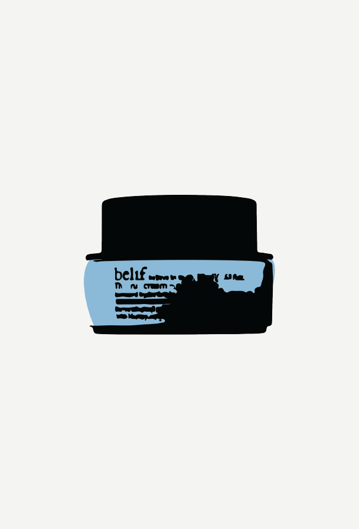
Dry Skin
One would consider their skin type to be dry if they notice a tightness to their skin. They may have scaly patches or flaking, and pores are generally invisible. Those who have dry skin may suffer from premature wrinkles and at times experience irritation.
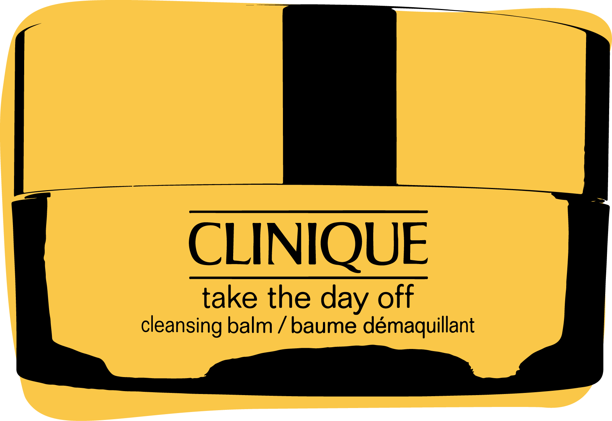
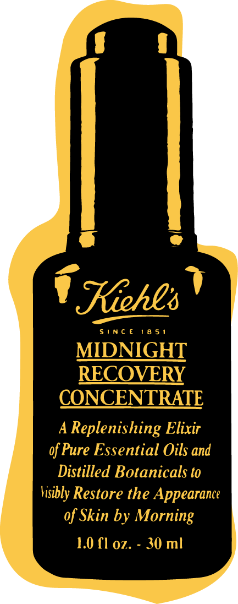
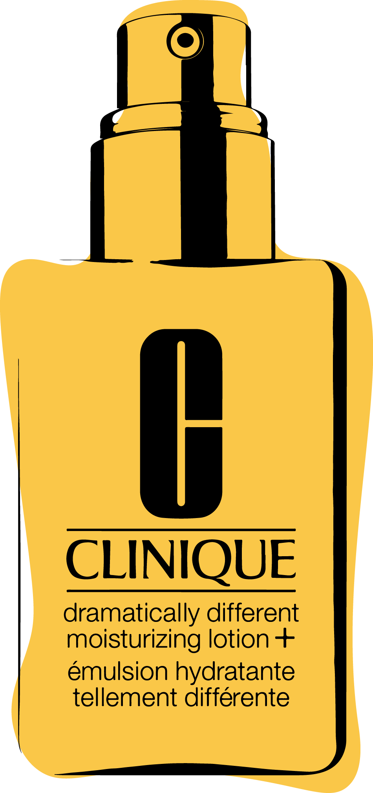
DONE
×
CLINIQUE
Take The Day Off Cleansing Balm
This makeup remover effortlessly dissolves even the most tenacious makeup and sunscreen. Its non-greasy, non-drying, lightweight formula nourishes skin, cleanses thoroughly, and rinses off completely, so all that’s left is a fresh, dewy glow. A transformational, lightweight makeup remover that goes from balm to oil to milk to melt away every trace of eye and face makeup and sunscreen.
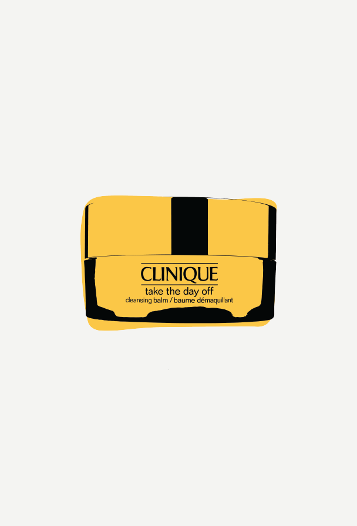
×
KIEHL'S
Midnight Recovery Concentrate
Midnight Recovery Concentrate restores and replenishes for smoother, healthier-looking skin—all while you sleep. This powerful formula works at night when skin is most receptive to repairing itself from daily aggressors. A blend of oils—including naturally-derived lavender, evening primrose, and squalene—to deliver essential hydration and promote a softer, smoother, brighter complexion.
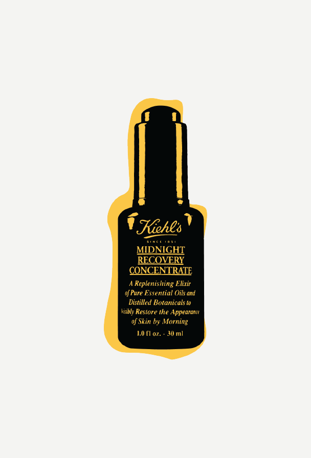
×
CLINIQUE
Dramatically Different Moisturizing Lotion
This cult-classic moisture "drink" developed by Clinique's dermatologists maintains optimal moisture balance for very dry skin or comfortable to oily skin in the T-zone. With a silky texture and quick penetration, this lightweight formula strengthens skin's own moisture barrier by 54 percent, so more moisture stays in. All-day hydration leaves skin silky-soft, springy, and absolutely radiant. Skin looks younger, longer.
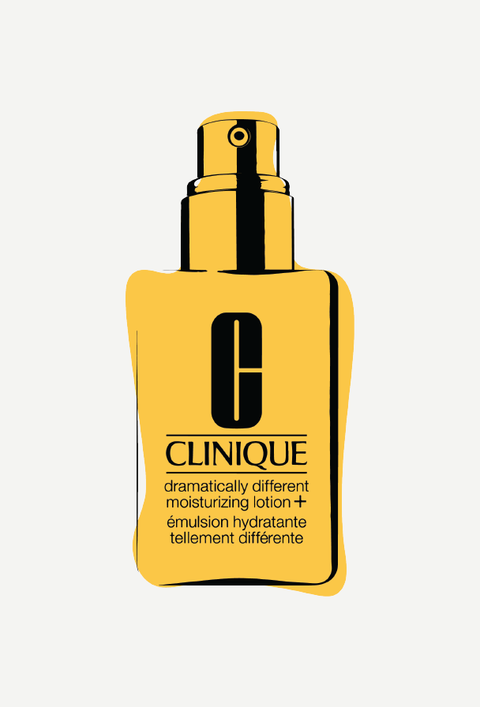
Oily Skin
One would consider their skin type to be oily if they notice a great deal of shine on their face. They often deal with enlarged pores which makes skin prone to blackheads and other blemishes. Those with oily skin may experience extreme acne breakouts.
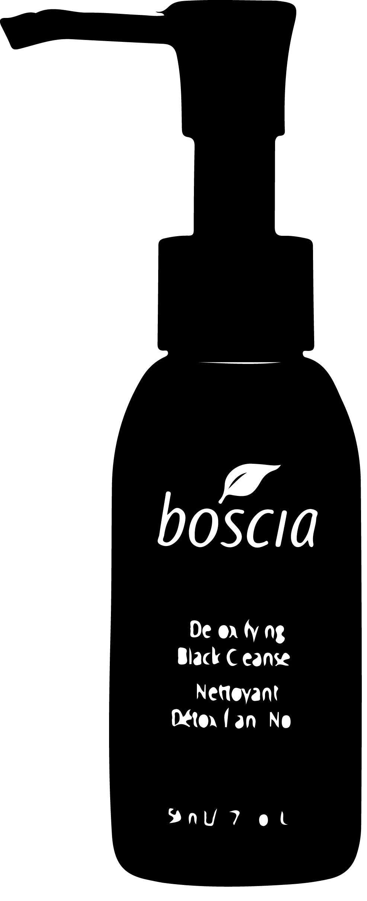
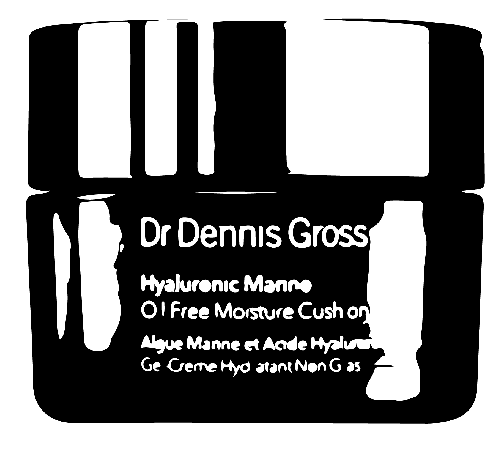
DONE
×
BOSCIA
Detoxifying Black Charcoal Cleanser
The Detoxifying Black Cleanser creates a smooth, luminous, clarified, and healthy-looking complexion. Brimming with purifying black activated charcoal and vitamin P, the active component in citrus peel, the formula warms skin on contact to open the pores, then lifts away dirt, oil, and impurities to combat acne and blemishes. Skin is left looking and feeling smooth, even toned, and glowing.

×
SUNDAY RILEY
U.F.O. Ultra-Clarifying Face Oil
A quick-absorbing, medicated dry oil to clear congested pores, treat and prevent acne, and smooth the appearance of fine lines and wrinkles for clearer, smoother skin. Counterbalancing the potentially drying effects of salicylic acid, milk thistle and cucumber seed oil nourish the skin and smooth the appearance of lines and wrinkles, without leaving a greasy residue. Chamomile and neroli soothe stressed, blemish-prone skin.
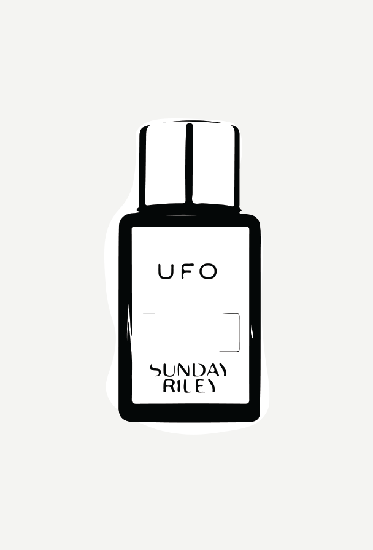
×
DR. DENNIS GROSS SKINCARE
Hyaluronic Marine Oil-Free Moisture Cushion
A unique, water-break gel-cream formula featuring Japanese marine algae and hyaluronic acid to lock in moisture and keep skin looking dewy, supple, and plump all day. Commonly referred to as “sea grapes” or “green caviar”, this Japanese algae is fortified with essential amino acids and B vitamins, working synergistically with hyaluronic acid to enhance skin’s elasticity and moisture content.
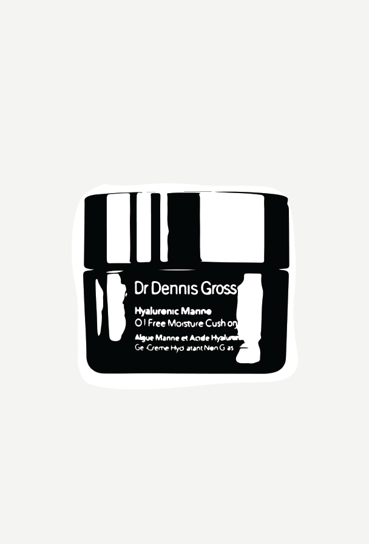
Combination Skin
One would consider their skin type to be combination if their skin features two or more different skin types on their face. Many often mistake combination skin to be oily as it can be hard to identify and treat. Excess shine generally occurs in the T-zone, which includes the forehead, nose, and chin. A skin routine must be able to exfoliate without irritation.
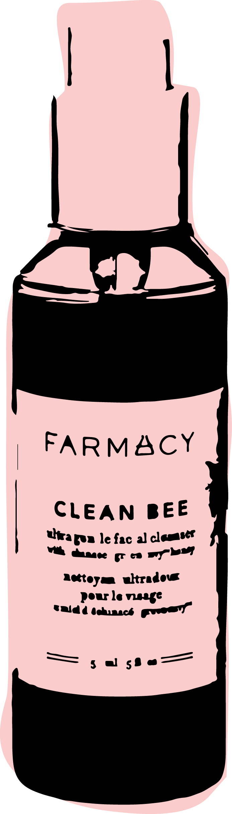
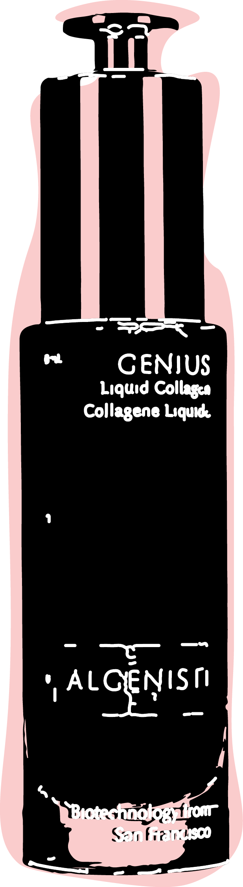
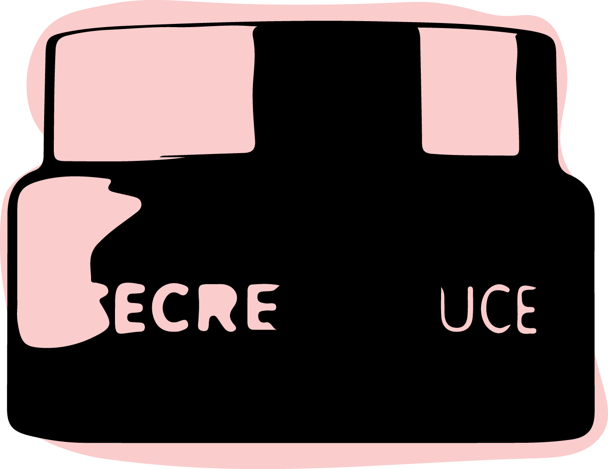
DONE
×
FARMACY
Clean Bee Ultra Gentle Facial Cleanser
An ultra-gentle, soothing facial cleanser that lifts away excess oil, impurities, and makeup while infusing moisture with honey and hyaluronic acid. Perfect for everyday use and made with sensitive skin in mind, this Ultra Gentle Facial Cleanser washes away surface oil, impurities, pollution residue, and makeup while helping to maintain the skin’s natural moisture barrier. The hydrating formula helps to soothe dry skin and leave it feeling soft and clean.
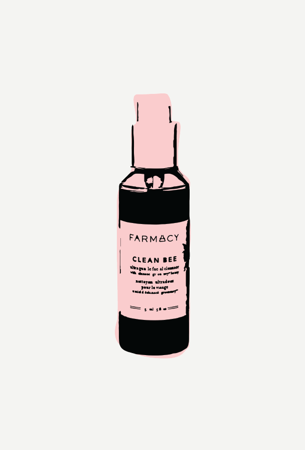
×
ALGENIST
GENIUS Liquid Collagen
This breakthrough fountain of youth leverages a clean, vegan formulation design to help replenish and preserve a healthy, youthful skin matrix by delivering vegan collagen to the skin in its most active state. The anti-aging formula contains 13,000 microalgae oil beads naturally sourced and sustainably produced, omegas 3, 6, and 9, and a natural source of vitamin E. Skin is left more resilient, brighter, and youthful-looking.
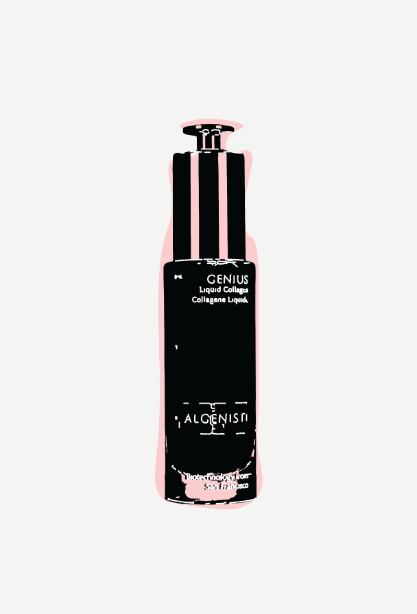
×
IT COSMETICS
Secret Sauce Clinically Advanced Miraculous Anti-Aging Moisturize
This breakthrough fountain of youth leverages a clean, vegan formulation design to help replenish and preserve a healthy, youthful skin matrix by delivering vegan collagen to the skin in its most active state. The anti-aging formula contains 13,000 microalgae oil beads naturally sourced and sustainably produced, omegas 3, 6, and 9, and a natural source of vitamin E. Skin is left more resilient, brighter, and youthful-looking.
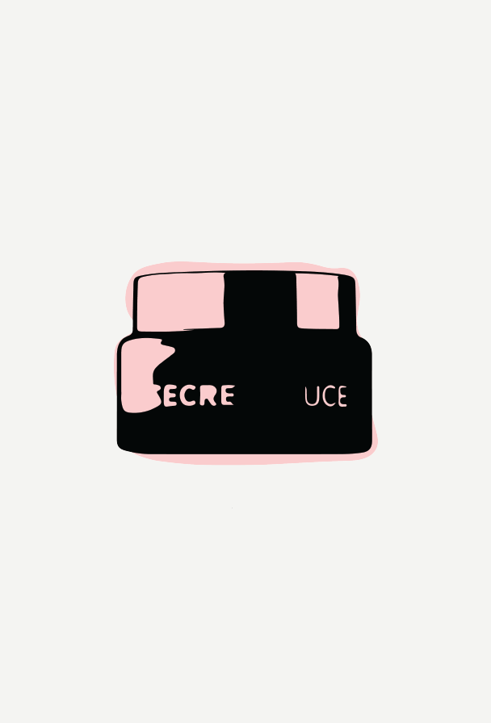